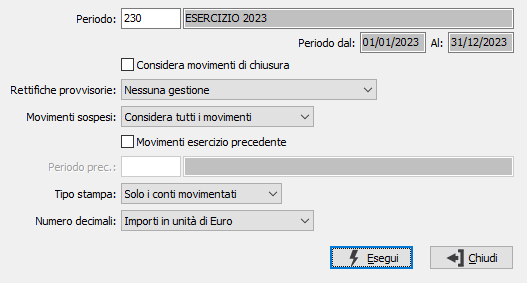

Controllo bilancio
Il programma esegue la lettura dei movimenti contabili compresi fra le due date derivanti dal periodo inserito e crea le totalizzazioni sulla base dei codici di conto IV Direttiva contenuti nelle anagrafiche del piano dei conti e consente di stampare un report dove viene riportata l'associazione dei codici del piano dei conti CEE con i codici del piano dei conti aziendale comprendente i valori elaborati.
Accedendo al programma appare la seguente finestra video:

PERIODO: definisce il periodo di elaborazione dei movimenti contabili, la selezione dei movimenti per data terrà contro delle date presenti nel periodo. Per periodi di tipo esercizio deve esistere l’esercizio contabile per gli altri periodi è necessario che la data di inizio periodo corrisponda alla data di inizio esercizio. Sul campo sono attive le funzioni di ricerca (F9) sulla tabella stessa.
CONSIDERA MOVIMENTI DI CHIUSURA: check box che determina il trattamento dei movimenti di chiusura effettuati con l’apposita causale. L’informazione è utile quando si rielaborano bilanci relativi ad esercizi già chiusi, per escludere le scritture di chiusura di esercizio che determinerebbero il saldo a zero di tutti i conti economici e patrimoniali. Se la casella è vuota non considera i movimenti di chiusura, altrimenti considera anche i movimenti di chiusura (scelta generalmente priva di logica perché, comprendendo i movimenti di chiusura, il saldo dei sottoconti è zero).
RETTIFICHE PROVVISORIE: casella significativa solo per la versione Enterprise che prevede tale tipo di movimenti. Permette di includere nell'elaborazione di bilancio le rettifiche provvisorie inserite attraverso l'apposito programma di gestione. Valori ammessi:
Nessuna gestione: non elabora le rettifiche.
Movimenti associati al periodo: elabora solo rettifiche dove il codice del periodo è lo stesso dell'elaborazione.
Movimenti rientranti nelle date del periodo: elabora solo le rettifiche che rientrano nelle date previste dal periodo di elaborazione.
MOVIMENTI SOSPESI: combo box significativo solo per la versione Enterprise che prevede tale tipo di movimenti. Valori ammessi:
Considera tutti i movimenti.
Escludi i movimenti sospesi.
Considera solo i movimenti sospesi.
MOVIMENTI ESERCIZIO PRECEDENTE: considera i valori dell’esercizio precedente nel caso in cui non sia stato ancora chiuso (casella con segno di spunta).
PERIODO PRECEDENTE: attivo solo se spuntata la casella "Movimenti esercizio precedente"; inserire il periodo relativo alle rettifiche dell'esercizio precedente; il periodo deve essere riferito a date che rientrano nell'esercizio precedente rispetto al periodo di elaborazione. Sul campo sono attive le funzioni di ricerca (F9) sulla tabella stessa.
TIPO STAMPA: definisce se stampare tutti i conti o solo i conti che hanno avuto una movimentazione.
NUMERO DECIMALI: indica se gli importi devono essere arrotondati all'unità di Euro oppure non devono essere arrotondati.